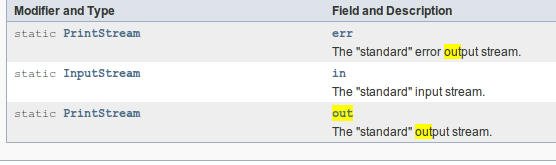

Java输入输出笔记
Table of Contents
1 java.io
1.1 File 文件类
提供对文件和目录的基本操作方法，例如：创建/删除 文件/目录，提取各种属性（大小，路径，修改时间，文件名，可执行，可读写…)，重命名，列出当前目录下的文件等。
该类比较简单，此处只记录部分难点。
1.1.1 File.separator
为使文件分隔符平台无关而创建的一个与平台有关的变量，在Win上是\在*nix上是/
1.1.2 File getAbsoluteFile()
File对象调用该方法，返回一个与File对象。
如果调用File对象本身就是绝对路径，则返回File对象与调用File对象没有区别；如果调用File对象是相对路径，则返回File对象与调用File对象区别仅在前者是绝对路径，后者相对路径。
File file = new File("/home/visayafan/study/program/java/JavaIO/src/xjtu/test.txt"); System.out.println(file); System.out.println(file.getAbsoluteFile()); File file = new File("test.txt"); System.out.println(file); System.out.println(file.getAbsoluteFile());
1.2 IO
1.2.1 输入输出流简介
流 任何有能力产生数据源的数据对象或接受数据的接收端对象。
任何继承自InputStream或Reader的类都有read方法，可以从流中读取单个字节或字节数组数据，任何继承自OutputStream/Writer的类都有write方法，可以向流中写单个字节或字节数组数据。
字节处理数据的方法效率是相当低的，于是出现了各种过滤流（处理流／包装流）。创建流对象时很少使用单一的类来创建，通常是用多种类的组合来达到期望的目的，如现有一字符串，想把它作为数据源，可以用 StringReader ，它的构造函数参数为String类型，于是:
StringReader sr = new StrignReader("theStringYouHave")也可以用
BufferedReader ，其构造函数参数类型为Reader类型，由于StringReader继承自Reader，于是可以做为其参数：
BufferedReader br = new BufferedReader(new StringReader("theStringYouHave")).不同包装类有其自己不同其它类的优势，例如：
DataOutputStream 可以和 DataInputStream 处理基本类型数据； BufferedInputStream 和 BufferedOutputStream 由于使用了缓冲技术对大批数据的处理速度比较快；
Reader和Writer类与InputStream/OutputStream类不同在于前者是面向字符而后才面向字节，通常1字符=2个字节，可以通过 InputStreamReader 和 OutputStreamWriter 实现字节处理到字符处理的转化。
1.2.2 包装流
- FilterInputStream
FilterInputStream包含其它的InputStream做为它的数据源，并对输入输出流进行特定的控制。
其子类常用的有：
- DataInputStream：与
DataOutputStream配合使用，可以按照可移植方式读取基本类型。
- BufferedInputStream：带缓冲区的
- LinedNumberInputStream：跟踪行号：getLineNumber(), setLineNumber(int)
- PushbackInputStream：将最后读取的字符退回到流中，例如已知需要从流中获取的数据以特定的字节终结但并不知道具体的数目时，可以用
PushbackInputStream，此时会把读到的终结字符退回到流中等待下次读取
- DataInputStream：与
- FilterOutputStream
常用子类有：
- DataOutputStream
- BufferedOutputStream
- PrintStream:用来方便处理数据输出。
- 不像其它
OutputStream输出一样，PrintStream不会抛出IOException异常，异常仅会设置一个内部标志，可以会checkError方法来检查。
PrintStream可以设置为当字节数组写入时自动调用flush方法来自动刷新
- 不像其它
- DataOutputStream
1.2.3 Reader/Writer
- Reader
OutputStream和InputStream是字节层次的类，而Reader Writer是字符层次的类，前者不能很好地处理Unicode字符，而后者则支持较好。
常用子类：
- BufferedReader
- CharArrayReader
- InputStreamReader
- StringReader
- PipedReader
- FilterReader
- BufferedReader
- Writer
- BufferedWriter
- CharArrayWriter
- OutStreamWriter
- PipedWriter
- StringWriter
- FilterWriter
- PrintWriter: 可以将格式化的对象输出到输出流，例如format和printf函数。为更容易由
PrintStream过渡到PrintWriter，PrintWriter即接受Writer对象又接受OutputStream对象，并且还接收File和String对象来初始化。
- BufferedWriter
1.2.4 RandomAccessFile
随机存储，其工作方式类似把 DataInputStream 和 DataOutputStream 结合起来并添加了可移动文件指针的相关函数，例如：
- getFilePointer(): 返回当前偏移
- length(): 返回文件长度
- seek(long pos): 设置文件指针偏移
- setLength(int n): 设置文件长度
1.2.5 标准输入输出
- in/out/err
System.in System.out System.err为标准输入输出，标准错误输出流。

可以看到out和err是PrintStream类型，而in是未加包装的原始InputStream，所以如果要使用out或err的话，可以直接用System.out或System.err来初始化包装类，而System.in必须加以手工包装。
a
/*用 InputStreamReader 将 InputStream类型的 System.in 转化成 Reader类型， 并用来初始化一个BufferedREader*/ BufferedReader bfr = new BufferedReader(new InputStreamReader(System.in)); String s; while ((s=bfr.readLine()) != null && s.length() !=0) { System.out.println(s); } /*因为System.out是PrintStream（父类是FilterOutputStream(父类是OutputStream)）类型， PrintWriter可以接收OutputStream类型的初始化参数*/ PrintWriter pw = new PrintWriter(System.out, true); pw.println("helloworld");
- 重定向
System.setIn(InputStream)/setOut(PrintStream)/setErr(PrintStream)可以重定向标准输入输出标准错误输出。
2 java.nio
2.1 ByteBuffer
函数:
ByteBuffer slice() 返回一个ByteBuffer对象，内容为当前ByteBuffer从position开始的内容，
并且二者共用内存（即修改一个会影响另一个）。